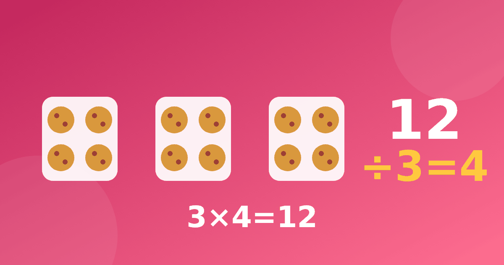

Деление как обратное умножение: простое объяснение для детей

Часто бывает так, что умножение уже получается, а деление вызывает ступор. Ребёнок знает, что 6 × 4 равно 24, но на вопрос «сколько будет 24 разделить на 4» молчит. Хорошая новость в том, что отдельную «таблицу деления» заучивать не нужно. Если понимать, как деление и умножение связаны, одна таблица работает в обе стороны. Рассмотрим, как объяснить деление ребёнку так, чтобы он понял, а не запомнил наизусть.
Что такое деление на самом деле
У деления есть два привычных смысла, и оба стоит показать на предметах. Первый называется делением на равные части. У нас 12 конфет, нужно раздать их поровну трём детям. Сколько достанется каждому? Второй называется делением по содержанию. У нас 12 конфет, в каждый пакетик кладём по 3. Сколько пакетиков получится?
В обоих случаях в ответе получается 4, и оба ответа связаны с умножением: 3 × 4 = 12. Попросите ребёнка разложить настоящие предметы, например пуговицы, монеты или карандаши. Руки учат лучше любых правил.
Семья примеров из трёх чисел
Главная идея для ребёнка в том, что четыре примера на самом деле одно знание. Возьмём числа 3, 4 и 12.
- 3 × 4 = 12.
- 4 × 3 = 12.
- 12 разделить на 3 равно 4.
- 12 разделить на 4 равно 3.
Такую «семью» можно нарисовать домиком: в вершине самое большое число, а внизу два множителя. Ребёнок сам видит, что из трёх чисел получается четыре примера. После нескольких таких домиков он начинает автоматически думать: «Чтобы поделить 28 на 4, надо вспомнить, на что умножить 4, чтобы получить 28». Это и есть деление через таблицу умножения.
Чтобы такой приём работал, нужно хорошо знать само умножение. Если с этим пока непросто, вернитесь к порядку изучения таблицы умножения и к самым трудным примерам из статьи про умножение на 7 и 8.
Пошаговое объяснение
Рассмотрим, как провести первое занятие. Не нужно торопиться и давать много примеров.
- Разложите 8 предметов на 2 равные кучки и спросите, сколько в каждой.
- Разложите те же 8 предметов по 2 в каждую кучку и спросите, сколько получилось кучек.
- Запишите оба действия. Покажите, что в записи появляется знак деления.
- Найдите связанный пример на умножение и сравните числа.
- Повторите то же на других числах, пока ребёнок не начнёт предсказывать ответ раньше вас.
Закрепляйте на небольших числах. Если вы хотите сразу перейти к большим, ребёнок потеряет связь с предметами, и всё снова превратится в абстракцию.
Деление в 3 классе
Для деления в 3 классе обычно требуется свободное владение таблицей и умение работать с делением на однозначное число. Здесь ребёнок встречает деление двузначных чисел, деление с остатком и текстовые задачи. Хорошая подготовка начинается с простого. Он должен мгновенно находить числа, которые делятся на данное. Например, на 6 делятся 12, 18, 24, 30, 36, 42, 48, 54. Этот ряд ребёнок знает из столбика на 6.
Следующий шаг — деление с остатком. Если 25 конфет раздать по 4, получится 6 пакетиков и 1 конфета останется. Остаток всегда меньше делителя, и это легко проверить предметами. Научите ребёнка искать «ближайшее число из таблицы, которое не больше». Для 25 и 4 это 24, а значит, остаётся 1.
Типичные ошибки
Дети часто путают, какое число делят на какое. Помогает короткая проверка: ответ умножаем на делитель и должны получить исходное число. Эту проверку полезно делать каждый раз. Она занимает несколько секунд, но воспитывает привычку убеждаться в результате.
Ещё одна частая сложность — деление нуля и на ноль. Нуль, делённый на любое число, остаётся нулём. А делить на ноль нельзя, потому что нет числа, которое при умножении на 0 даст что-то кроме 0. Объясните это на примере: «Раздай 5 конфет нулю детей. Что получится?» Обычно после такого вопроса ребёнок сам видит нелепость.
Игры на деление
Деление хорошо закрепляется в играх. Раздавайте карточки, делите игрушки поровну, угадывайте «секретное число» по подсказкам вроде «если его разделить на 5, получится 7». Больше идей собрано в статье про игры для таблицы умножения: большинство из них легко превратить в игры на деление, достаточно поменять вопрос.
Как помогает тренажёр
В нашем тренажёре деление идёт сразу после умножения и опирается на те же картинки. Ребёнок видит, что строчка «12 разделить на 3» отвечает на вопрос «сколько раз по 3 в числе 12», и сам находит ответ по знакомой таблице. Начать можно бесплатно и без регистрации.